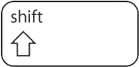
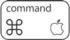

this is YOPKS div#header - it will have a logo and site description as well as control buttons to view your shortcuts list in printable view, save as PDF, etc. (maybe eventually a Mac .prefs file of your shortcuts and/or an AutoHotKey .akh script of your shortcuts for download)
LOGO HERE
YOUR OWN PERSONAL KEYBOARD SHORTCUTS CHEAT SHEET GENERATOR
SHORT SITE INFO HERE
LONGER SITE INFO HERE
LOGIN/REGISTER
HELP
CONTACT
this is YOPKS div#torso
modifier keys (select the modifier icons used)


additional keys (select any additional keys)
text version of your shortcut
title/description (tell what action the shortcut performs)
sub-title/notes (anything else you need to remember?)
application name (pull icon from iUseThis)
this is YOPKS div#yourShortcutList - it will list all the shortcuts you've added using the shortcut maker above
MY OWN PERSONAL KEYBOARD SHORTCUTS CHEAT SHEET
PDF
MAC.PREF
WIN.AHK
modifier keys (select the modifier icons used)
additional keys (select any additional keys)
text version of your shortcut
title/description (tell what action the shortcut performs)
sub-title/notes (anything else you need to remember?)